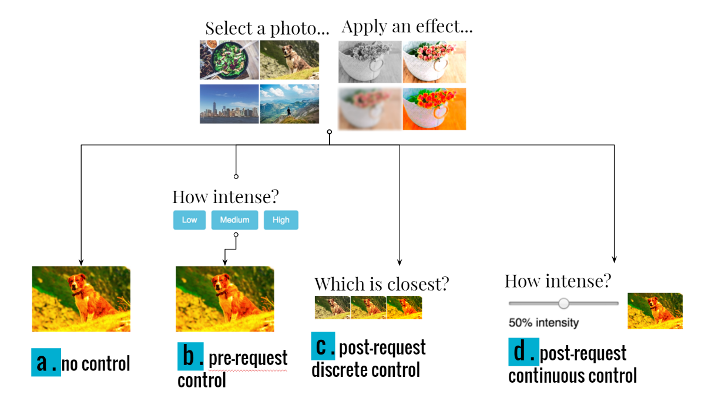
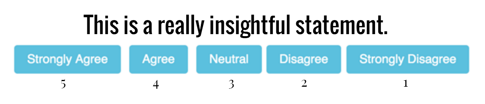

During the summer of 2016, I interned at Adobe Research in the Creative Technologies Lab. Within the CTL, I worked closely with the Scout team to explore the (still under the works) idea of a "creative concierge" platform.
I ended up dividing the problem into three different points:
Creative needs vs. Time and/or Skills
Mostly everyone has creative needs. That being said, not everyone has the capacity to fulfill those needs by themselves; working parents might not have the time, and specialized real estate aents may not have the technical skills to work with creative software like Photoshop, Lightroom, and Illustrator. As a workaround to these obstacles, many people resort to "creative concierge"type platforms, whereby a creative request is fulfilled by some third party (usually a creative professional)for a hefty amount of money. Examples of such platforms are Fiverr, Dribbble, and 99Designs.
Back and forth communication is inefficient
One common problem that current platforms fail to address is the inefficiency of a back and forth communication. Upon fulfillment of a creative request, it's pretty common for the client to not be 100 percent satisfied - and to make additional requests and clarifications to the creative professional, resulting in increasingly long email chains, time spent on a single project, and work on the creative professional's part. Thinking on a broader scale, these inefficiencies would hinder the ability of any creative concierge product to scale to larger degrees.
Less user control = Less creative involvement
Past HCI work has shown that giving control leads to greater feelings of creative empowerment and involvement. In a transactional-based platform at a company whose biggest commodity is creativity, how do we preserve feelings of creative control and empowerment?
So - if we constrain communication to a one-way communication (i.e. someone makes a request, someone fulfills the request, and that's it), how much control can we give to users such that they feel 1) satisfied and 2) creatively empowered?
Through a combination of focus groups and personal experiences, I identified a general process that requesters (i.e. people who make requests for creative products) follow:
The first question I set out to answer was how the timing of control affected users' satisfaction and feelings of creativity, if at all.
To answer this question, I programmed up a simple web page with the following flow:
Upon selecting one of four pre-chosen photos and an effect to apply to it, users would be directed to one of four different pages:
At the end of the webpage, users answered statements by showing their agreement with statements like "The image looked exactly how I expected it to look" and "I am creative" in Likert type format:
I put the website on Amazon Mechanical Turk and gathered results from approximately 350 subjects over the course of several days.
I observed three key things: